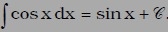
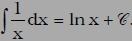
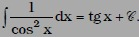
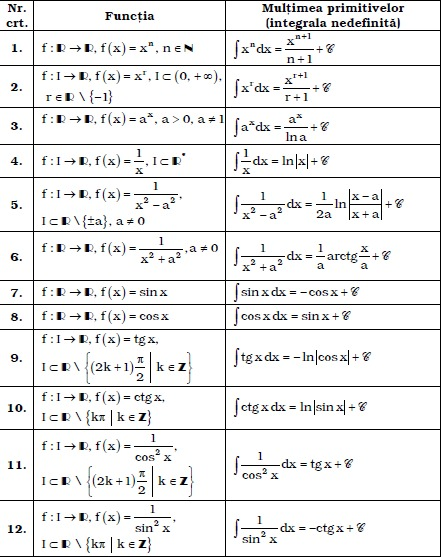
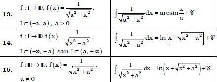
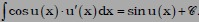
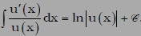
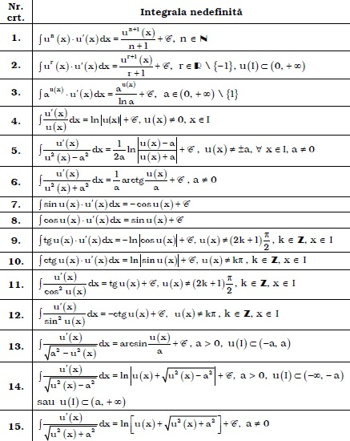
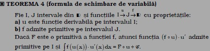
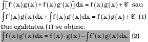

O problema esentiala care se pune relativ la noul concept de "primitiva a unei functii" este aceea a determinarii multimii primitivelor pentru o clasa cat mai larga de functii.
Fie I un interval de numere reale si f:I-->R o functie care admite primitive pe I.
Daca F:I-->R etste o primitiva a ei, atunci Feste o functie derivabila si F'(x)=f(x). oricare ar fi x care apartine intervalului I.
Astfel, definitia primitivei da posibilitatea determinarii acesteia in stransa legatura cu folosirea formulelor de derivare invatate in clasa a XI-a.
Ca urmare, apar urmatoarele posibilitati:
4.1. PRIMITIVE DEDUSE DIN DERIVATELE FUNCTIILOR ELEMENTARE
Ilustram acest procedeu prin cateva exemple:
a) Fie f:R-->R, f(x)=sin(x).
Avem (sin(x))'=cos(x), x apartine intervalului R, si astfel se obtine 
b) Fie f:(0,+infinit)-->R, f(x)=ln(x).
Avem (ln(x))'=1/x, x apartine intervalului (0,+infinit), si se obtine 
c) Fie f:(-pi/2,pi/2)-->R, f(x)=tg(x).
Avem (tg(x))'=1/cos^2(x) si se obtine 
Procedand analog pentru alte functii, se obtine urmatorul tabel de integrale nedefinite.


4.2. PRIMITIVE DEDUSE DIN DERIVAREA FUNCTIILOR COMPUSE
Ilustram procedeul pentru cateva exemple:
a) Fie I inclus in R un interval, u:I-->R functie derivabila pe I si f:R-->R, f(x)=sin(u(x)).
Avem f'(x)=(sin(u(x)))'=cos(u(x))*u'(x).
Rezulta ca sin(u(x)) este primitiva pentru cos(u(x))*u'(x), deci 
b) Fie u:I-->(0,+infinit) functie derivabila pe I si f:(0,+infinit)-->R, f(x)=ln(u(x)). Avem f'(x)=(ln(u(x)))'=u'(x)/u(x) si ca urmare se obtine:
In mod analog se pot obtine integralele nedefinite si pentru alte functii obtinute prin derivarea unor functii compuse.
Astfel, daca u:I-->J este functie derivabilape intervalul I, se obtine urmatorul tabel de integrale nedefinite.

In general are loc urmatorul rezultat:

4.3. PRIMITIVE DEDUSE DIN FORMULA DE DERIVARE A PRODUSULUI A DOUA FUNCTII
Fie f,g:I--R functii derivabile pe intervalul I, cu derivatele continue. Atunci (fg)'=f'g+fg'. Rezulta ca fg este o primitiva a functiei f'g+fg', iar multimea primitivelor verifica egalitatea:

Egalitatea(2) se numeste formula integrare prin parti.
Exemple rezolvate puteti gasi aici:
~~~Click !!~~~